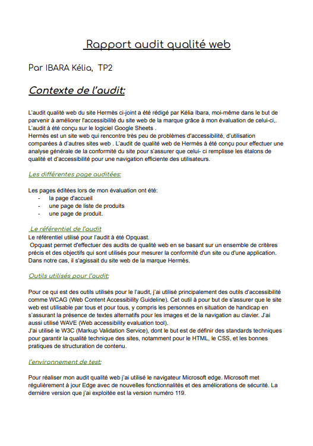

Audit Web Hermès
Recherche UX / Accessibilité

Le Brief
Réaliser un audit complet du site web Hermès afin de vérifier si l'interface répond aux besoins des utilisateurs et aux objectifs stratégiques de la marque.
Mon Rôle
Analyse de l'ergonomie, vérification de l'efficacité de la communication visuelle et évaluation de la conformité aux attentes des utilisateurs de luxe.
Outils & Référentiels
Google Docs, Critères WCAG (Accessibilité), Référentiel OPQUAST (Bonnes pratiques web).
Compétences
Audit UX, Accessibilité Numérique, Analyse de données, Stratégie de communication.